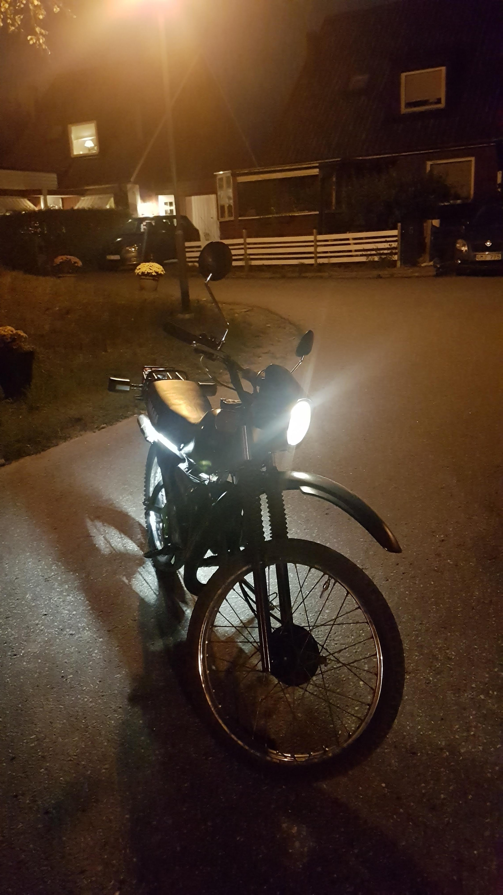

Yamaha Dt50mx
Årsmodell
1989 (31 år)
Setup
65 cc, 20 mm förgasare och trimrör

Hastighet
ca 70 km/h
Köptes för
2 700 kr
Vad är gjort?
Helt omlackerad
Nytt elsystem
Ny blinkers, baklampa samt framlampa
Nytt tändstift
Ny cylinder, förgasare samt rör
Nya backspeglar
Nytt sadelöverdrag
Ny Tuta
Nytt Drivsystem (kedja, fram och bakdrev
Vad ska göras?
Nya däck
Ny bensinkran
Ny växelpet
En ny blinkers(förra small)